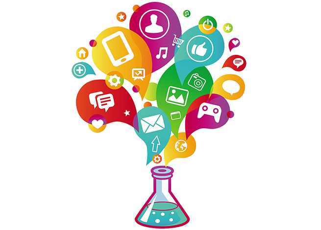

|  | -Etapas del Método Científico |
|
Paso 1: Hagan una preguntaPara el primer paso, ayude a su hijo a formular una pregunta; en lo posible ¡una que pueda responderse! Las buenas preguntas empiezan con palabras de pregunta: Cómo, qué, cuándo, quién, cuál, por qué o dónde. Por ejemplo, ¿qué taza tiene mayor capacidad? ¿Cuál de estos cuatro objetos crees que flotará en el agua? Paso 2: Investigar el temaPara los niños pequeños, investigar el tema puede incluir una conversación entre ellos acerca de lo que preguntarán. Quizás usted tenga un libro o haya visto un programa sobre el tema. El objetivo de esta etapa es incentivar al científico en la tarea del pensamiento. Paso 3: Elaborar una hipótesisUna hipótesis no es más que una buena conjetura que intenta responder la pregunta del paso 1. Pregúntele a su hijo: "¿Qué taza crees que tiene más capacidad, la azul o la roja? ¿Crees que el clavo flotará o se hundirá? ¿Crees que el bote de papel aluminio flotará o se hundirá?". Paso 4: Prueben su hipótesis haciendo un experimento¡Esta es la parte que usted y su hijo han estado esperando! Ayude a su científico a realizar el experimento. Aliente a su hijo para que sea un observador atento de todo lo que sucede. Hablen de los pasos del experimento. "Primero, llenamos nuestra jarra con agua. Luego, vertemos lentamente el agua en la taza". Paso 5: Analicen los datos y saquen una conclusiónEsta etapa se trata de los resultados. ¿Qué sucedió durante el experimento? Pregúntele a su hijo: "¿El papel de aluminio flotó o se hundió?" "¿Qué taza tenía mayor capacidad?" En esta etapa, ayude a su hijo a responder la pregunta elaborada en el paso 1. Paso 6: Compartan los resultadosAliente a su hijo a hablar con sus hermanos y otras personas que lo cuidan sobre el experimento. Haga que comente los pasos usados para realizar el experimento y lo que ha aprendido. Los experimentos de ciencias pueden ser rápidos y divertidos para hacer en casa. Si comparten el proceso científico, su hijo comenzará a pensar y a planear como hacen los científicos.
|
||